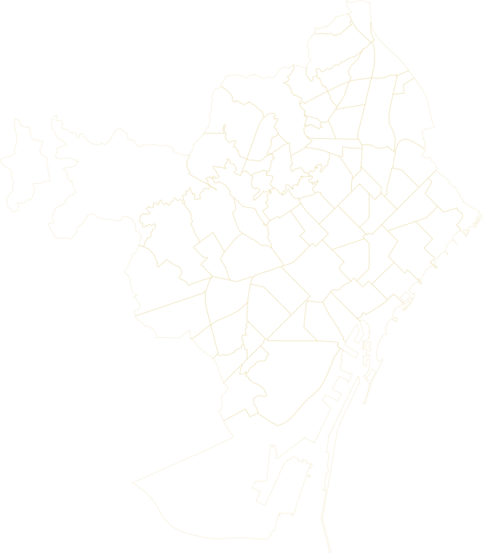

Observatorio independienteObservatori independentIndependent observatory
Índice de Cuotas y Comisiones del BarrioÍndex de Quotes i Comissions del BarriNeighbourhood Fees Index
Barcelona
Un proyecto independiente de la Dra. Natasha Cáceres, economista especializada en pagos y regulación financiera.Un projecte independent de la Dra. Natasha Cáceres, economista especialitzada en pagaments i regulació financera.An independent project by Dr Natasha Cáceres, economist specialising in payments and financial regulation.
CA/EN · Traducción pendiente en esta sección
Un índice independiente que compara lo que pagan los comercios de un mismo barrio por sus servicios de cada mes. Así, cada comercio sabe si está pagando de más.
Qué mide
- Cobro con tarjeta
- Banco
- Alarma
- Teléfono e internet
- Programas y suscripciones
Qué no mide
- Alquiler, luz y sueldos
- Sus ingresos
- Datos de un comercio concreto
Ejemplo · Comisión por cobrar con tarjeta
1,5 %
Peluquería
0,4 %
Promedio del barrio
Con 6.000 € al mes en ventas con tarjeta, esta peluquería paga unos 790 € al año de más.
Ejemplo ilustrativo.
El proveedor sabe lo que cobra a cientos de negocios. El comerciante solo conoce su factura.El proveïdor sap el que cobra a centenars de negocis. El comerciant només coneix la seva factura.
CA/EN · Traducción pendiente en esta sección
Ayude a su barrio a pagar lo justo
Revisamos sus facturas y le entrego un informe gratuito.
Sin copias ni documentos.
-
1
Quedamos en su local
-
2
Revisamos sus facturas
-
3
Recibe su informe
Qué necesito
- Liquidación del datáfono
- Recibos del banco en el móvil
- Última factura de alarma, teléfono y programas
Qué obtiene
- Comparación con negocios similares del barrio
- Coste real de cobrar con tarjeta, con todo incluido
¿Quiere una visita en su local?
Por WhatsApp, solo para quedar. Nunca me envíe documentos.
EN · Traducción pendiente en esta sección
El mapa
Pulse su barrio para ver sus datos. Los colores indican si hay datos o no, no si un barrio es caro o barato.Premi el seu barri per veure'n les dades. Els colors indiquen si hi ha dades o no, no si un barri és car o barat.
- Con datosAmb dades
- En recogidaEn recollida
- PróximamenteProperament
Mapa de Barcelona por barrios. Sin JavaScript, consulte la tabla de barrios más abajo.
| Barrio | Distrito | Unidad de publicación | Estado |
|---|---|---|---|
| el Raval | Ciutat Vella | — | Próximamente |
| el Barri Gòtic | Ciutat Vella | — | Próximamente |
| la Barceloneta | Ciutat Vella | — | Próximamente |
| Sant Pere, Santa Caterina i la Ribera | Ciutat Vella | — | Próximamente |
| el Fort Pienc | Eixample | — | Próximamente |
| la Sagrada Família | Eixample | — | Próximamente |
| la Dreta de l'Eixample | Eixample | — | Próximamente |
| l'Antiga Esquerra de l'Eixample | Eixample | — | Próximamente |
| la Nova Esquerra de l'Eixample | Eixample | — | Próximamente |
| Sant Antoni | Eixample | — | Próximamente |
| el Poble-sec | Sants-Montjuïc | — | Próximamente |
| la Marina del Prat Vermell | Sants-Montjuïc | — | Próximamente |
| la Marina de Port | Sants-Montjuïc | — | Próximamente |
| la Font de la Guatlla | Sants-Montjuïc | — | Próximamente |
| Hostafrancs | Sants-Montjuïc | Sants–Hostafrancs | En recogida |
| la Bordeta | Sants-Montjuïc | — | Próximamente |
| Sants - Badal | Sants-Montjuïc | — | Próximamente |
| Sants | Sants-Montjuïc | Sants–Hostafrancs | En recogida |
| les Corts | Les Corts | — | Próximamente |
| la Maternitat i Sant Ramon | Les Corts | — | Próximamente |
| Pedralbes | Les Corts | — | Próximamente |
| Vallvidrera, el Tibidabo i les Planes | Sarrià-Sant Gervasi | — | Próximamente |
| Sarrià | Sarrià-Sant Gervasi | — | Próximamente |
| les Tres Torres | Sarrià-Sant Gervasi | — | Próximamente |
| Sant Gervasi - la Bonanova | Sarrià-Sant Gervasi | — | Próximamente |
| Sant Gervasi - Galvany | Sarrià-Sant Gervasi | — | Próximamente |
| el Putxet i el Farró | Sarrià-Sant Gervasi | — | Próximamente |
| Vallcarca i els Penitents | Gràcia | — | Próximamente |
| el Coll | Gràcia | — | Próximamente |
| la Salut | Gràcia | — | Próximamente |
| la Vila de Gràcia | Gràcia | — | Próximamente |
| el Camp d'en Grassot i Gràcia Nova | Gràcia | — | Próximamente |
| el Baix Guinardó | Horta-Guinardó | — | Próximamente |
| Can Baró | Horta-Guinardó | — | Próximamente |
| el Guinardó | Horta-Guinardó | — | Próximamente |
| la Font d'en Fargues | Horta-Guinardó | — | Próximamente |
| el Carmel | Horta-Guinardó | — | Próximamente |
| la Teixonera | Horta-Guinardó | — | Próximamente |
| Sant Genís dels Agudells | Horta-Guinardó | — | Próximamente |
| Montbau | Horta-Guinardó | — | Próximamente |
| la Vall d'Hebron | Horta-Guinardó | — | Próximamente |
| la Clota | Horta-Guinardó | — | Próximamente |
| Horta | Horta-Guinardó | — | Próximamente |
| Vilapicina i la Torre Llobeta | Nou Barris | — | Próximamente |
| Porta | Nou Barris | — | Próximamente |
| el Turó de la Peira | Nou Barris | — | Próximamente |
| Can Peguera | Nou Barris | — | Próximamente |
| la Guineueta | Nou Barris | — | Próximamente |
| Canyelles | Nou Barris | — | Próximamente |
| les Roquetes | Nou Barris | — | Próximamente |
| Verdun | Nou Barris | — | Próximamente |
| la Prosperitat | Nou Barris | — | Próximamente |
| la Trinitat Nova | Nou Barris | — | Próximamente |
| Torre Baró | Nou Barris | — | Próximamente |
| Ciutat Meridiana | Nou Barris | — | Próximamente |
| Vallbona | Nou Barris | — | Próximamente |
| la Trinitat Vella | Sant Andreu | — | Próximamente |
| Baró de Viver | Sant Andreu | — | Próximamente |
| el Bon Pastor | Sant Andreu | — | Próximamente |
| Sant Andreu | Sant Andreu | Sant Andreu | En recogida |
| la Sagrera | Sant Andreu | — | Próximamente |
| el Congrés i els Indians | Sant Andreu | — | Próximamente |
| Navas | Sant Andreu | — | Próximamente |
| el Camp de l'Arpa del Clot | Sant Martí | — | Próximamente |
| el Clot | Sant Martí | — | Próximamente |
| el Parc i la Llacuna del Poblenou | Sant Martí | — | Próximamente |
| la Vila Olímpica del Poblenou | Sant Martí | — | Próximamente |
| el Poblenou | Sant Martí | — | Próximamente |
| Diagonal Mar i el Front Marítim del Poblenou | Sant Martí | — | Próximamente |
| el Besòs i el Maresme | Sant Martí | — | Próximamente |
| Provençals del Poblenou | Sant Martí | — | Próximamente |
| Sant Martí de Provençals | Sant Martí | — | Próximamente |
| la Verneda i la Pau | Sant Martí | — | Próximamente |
EN · Traducción pendiente en esta sección
Preguntas frecuentesPreguntes freqüents
¿Tengo que pagar algo por participar?He de pagar res per participar?
No. Participar y recibir su informe es gratis.No. Participar i rebre el seu informe és gratuït.
¿Qué es la recomendación personalizada y cuánto cuesta?Què és la recomanació personalitzada i quant costa?
Si su informe muestra que podría ahorrar 250 € al año o más, puedo prepararle por escrito qué cambiar o qué pedir a su proveedor, con la carta ya redactada. Cuesta 25 €, IVA incluido: es un precio simbólico para los negocios del barrio, que cubre el tiempo de preparación y no es mi tarifa profesional. Se paga al recibirla y, si no le sirve, no paga. Nunca recomiendo Ipso ni a ningún proveedor con el que tenga relación.Si el seu informe mostra que podria estalviar 250 € l'any o més, puc preparar-li per escrit què canviar o què demanar al seu proveïdor, amb la carta ja redactada. Costa 25 €, IVA inclòs: és un preu simbòlic per als negocis del barri, que cobreix el temps de preparació i no és la meva tarifa professional. Es paga en rebre-la i, si no li serveix, no paga. No recomano mai Ipso ni cap proveïdor amb qui tingui relació.
¿Cómo sé que no es un gancho para vender?Com sé que no és un esquer per vendre?
Solo ofrezco la recomendación cuando el ahorro posible es claro; si no, le digo que no le compensa. Cada trimestre publico aquí cuántos informes entregué y en cuántos casos no compensaba.Només ofereixo la recomanació quan l'estalvi possible és clar; si no, li dic que no li compensa. Cada trimestre publico aquí quants informes he lliurat i en quants casos no compensava.
CA · pendiente
- Informes entregados
- —
- No compensaba
- —
- Recomendaciones ofrecidas
- —
- Pagadas
- —
- No sirvió y no se cobró
- —
¿Por qué hay barrios sin datos?Per què hi ha barris sense dades?
Para proteger el anonimato, solo publico grupos de 10 negocios o más. Cualquier negocio puede participar.Per protegir l'anonimat, només publico grups de 10 negocis o més. Qualsevol negoci hi pot participar.
¿Es un estudio del Ayuntamiento o de una universidad?És un estudi de l'Ajuntament o d'una universitat?
No. Es un proyecto propio e independiente.No. És un projecte propi i independent.